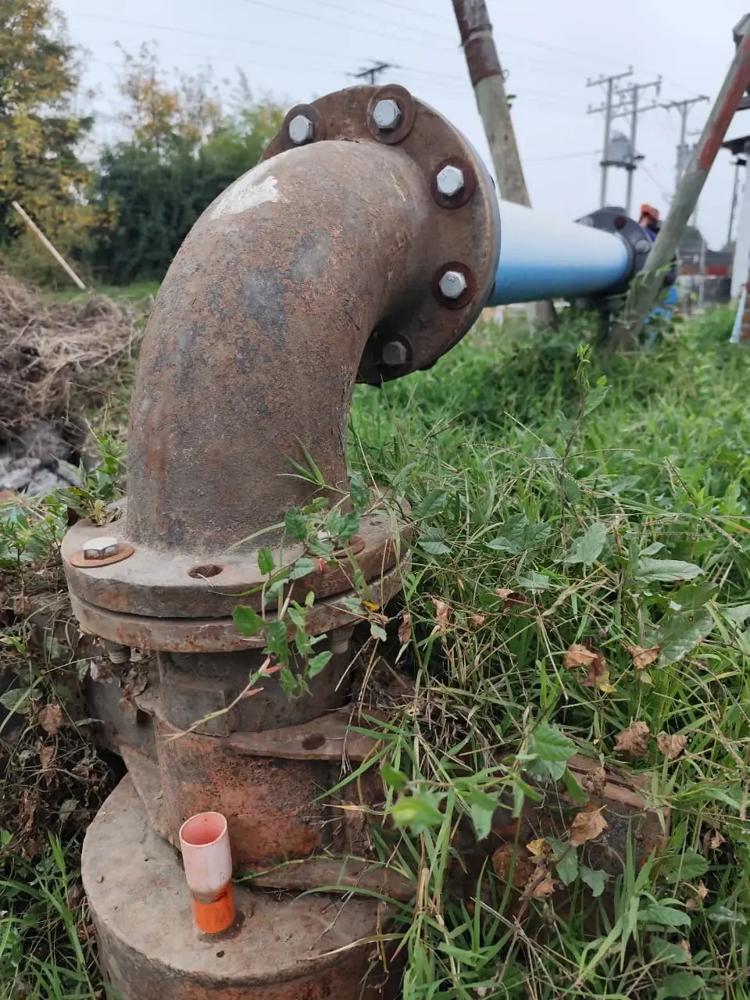

Inicio
Nosotros
SARCOM
Servicios
Proyectos
Clientes
Contacto
ACCESO SARCOM
Inicio
→
Proyectos
→
Ficha de proyecto
Pozo agrícola San Ignacio, Retiro
Más de
500 km
de canales monitoreados
·
Reducción del
30%
en pérdidas de agua

Monitoreo de Pozos
Pozo agrícola San Ignacio, Retiro
Descripción del proyecto
Recanalización e instalación del sensor de nivel ultrasónico con referencia a la regla.
Transmisión celular con señal 4G.
Gaveta antivandálica.
← Volver a proyectos
Competitivo en el mercado